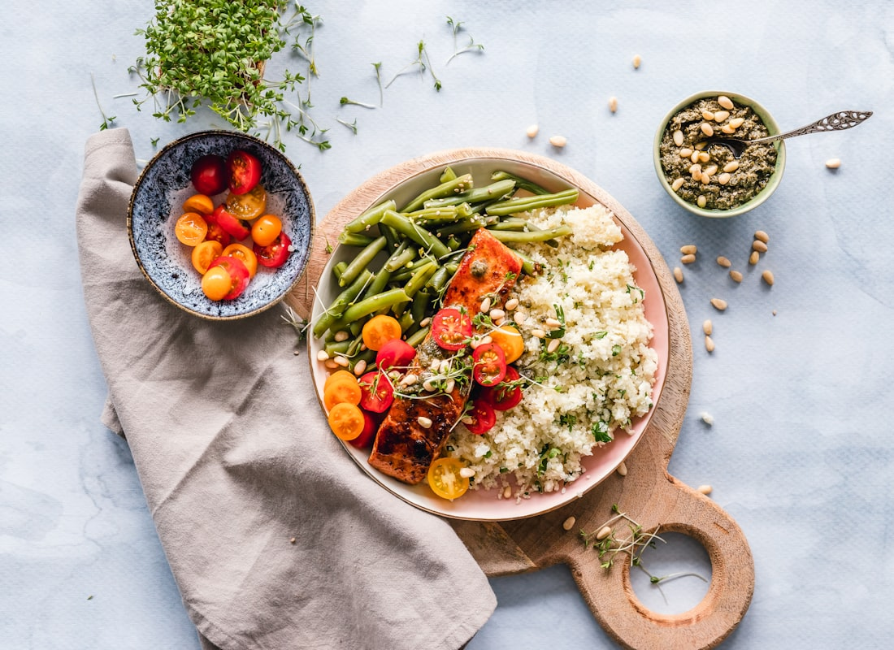

Recipe
Lean beef + sweet potato stew
Beef once this week. Lean, more vegetables than meat. Sweet potato instead of white potato.
4 bowls
20 min prep · 50–60 min simmer
3–4 days fridge · freeze Thu dinner + Fri lunch


Swipe for more photos.
Ingredients
- 1¼ lb extra-lean stew beef or sirloin, 1-inch cubes, fat trimmed
- 1 tablespoon olive oil
- 1 large onion, diced
- 3 celery stalks, sliced
- 3 carrots, coins
- 3 garlic cloves, minced
- 8 oz mushrooms, halved
- 1½ lb sweet potatoes, 1-inch chunks
- 2 tablespoons tomato paste
- 1 tablespoon balsamic vinegar
- 4 cups low-sodium beef broth
- 1 (14 oz) can no-salt-added diced tomatoes
- 1 teaspoon dried thyme
- 1 teaspoon dried rosemary, crushed
- 2 bay leaves
- ½ teaspoon black pepper
- 1 cup frozen peas (last 5 minutes)
- Optional: 1 tablespoon cornstarch + 2 tablespoons cold water
Steps
- Pat beef dry. Pepper it.
- Heat oil. Brown beef in two batches. Set aside.
- Same pot: onion, celery, carrots, mushrooms 6 minutes. Garlic 30 seconds. Tomato paste 30 seconds.
- Splash balsamic, scrape the brown bits.
- Return beef. Add broth, tomatoes, sweet potato, thyme, rosemary, bay, pepper.
- Simmer partly covered 45–60 minutes until beef is tender.
- Peas 5 minutes. Fish out bay leaves. Slurry only if you want it thicker.
- Cool shallow. Freeze 2 portions Sunday night. Reheat to a simmer.
Why it fits the week
Trimmed beef, olive oil, a pot of roots. Not a steak-and-butter plate.